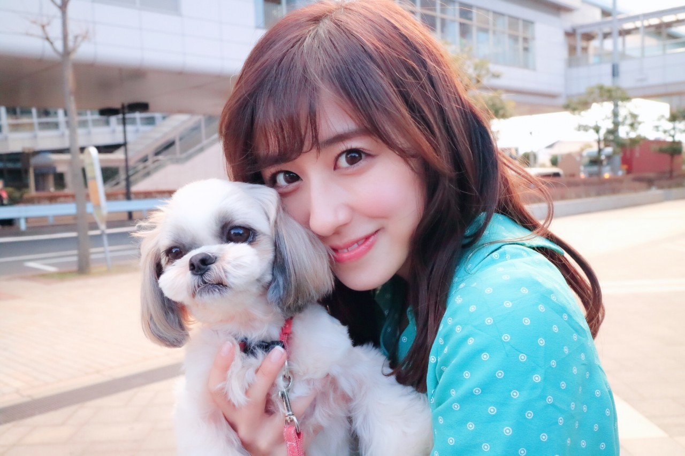
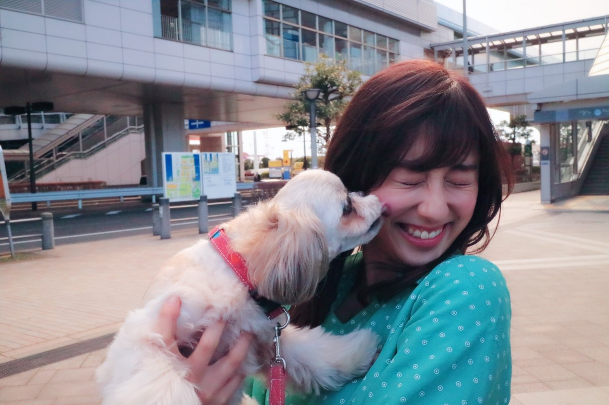
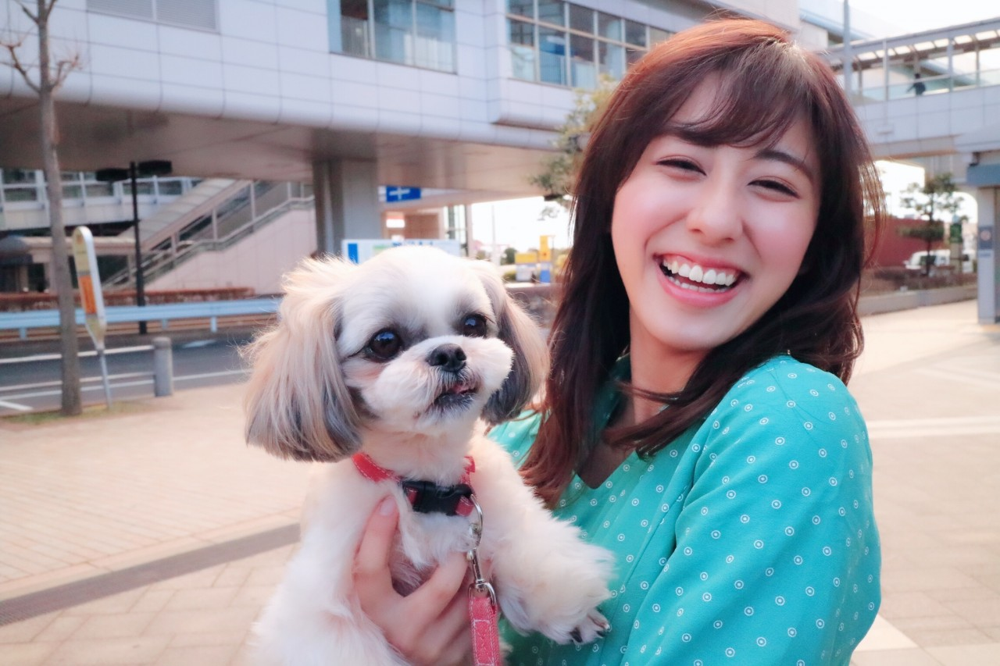
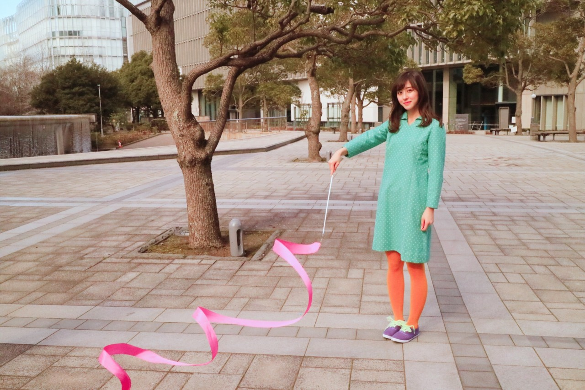

| 2017/04 07 Fri | 斎藤ちはる ワンちゃん |
ちはるーむへようこそ
今日のちはるーむではみんなでマリオカートで対決しました。(沈金より)
今日は世界保健デーです。
WHOが発足されたこの日を世界保健デーと制定しました。
WHOの目的は「すべての人々が可能な最高の健康水準に到達すること」です。
そんな世界が訪れたらいいな。
今日は17th個人PV、
斎藤リボンのオフショットを
沢山載せちゃいます◎
この日沢山撮ったんだ〜！！
だから沢山載せたくてっ
見てくれた方の中には
あ、この場面だ！とピンとくる方もいるかも？

共演した、ワンちゃん！
モデルのワンちゃんだったんだけど
良い子だったな〜☺︎
ちゃんと写真撮る時は
カメラ目線をするんだよ！
うちのさくらは全然そっぽ向いちゃうから
正面からの写真はなかなか撮れないの...
だからびっくり！
そして可愛かった☺︎


ほっぺペロペロされて
満面の笑みになったよ(﹡ˆ ˆ﹡)笑

そしてワンちゃんの隣で
リボンと散歩している私。
なんだかシュールだなあ
笑
まだまだ載せたいのあるから
また載せちゃいますね〜☺︎
斎藤リボン
------------------------------------------------♡
♬ ChihaMusic
「恋に落ちる音が聞こえたら」SHISHAMOさん
歌詞の中の世界観というか、
女の子の気持ちや想いが
可愛すぎて可愛すぎて
胸がきゅーとなる。
"ずーっと見てたい君の横顔
昨日までは照れ臭くて後ろから見てたから
今日からは目を離さないよ"
なんて可愛いのよ...
後ろから見てたから目を離さないって
そんな事言われたら
女の子の私でも惚れちゃうよ〜
可愛いって言葉が足りないよ〜
明日は「のぎ天2」生配信です！！！
今までのアンダーライブを振り返ってみたり
今後のアンダーライブについて話し合ってみたり
(多分)
すると思うのでっ
アンダーライブに来てくださる皆さんは
必見ですよ( ¨̮ )
皆さん是非見てね！
おやすみ
斎藤ちはる